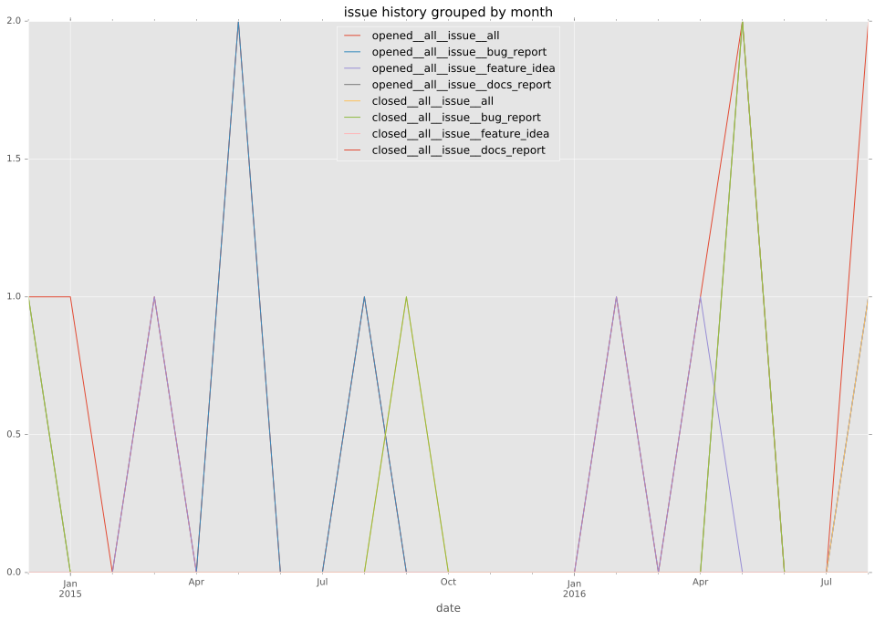
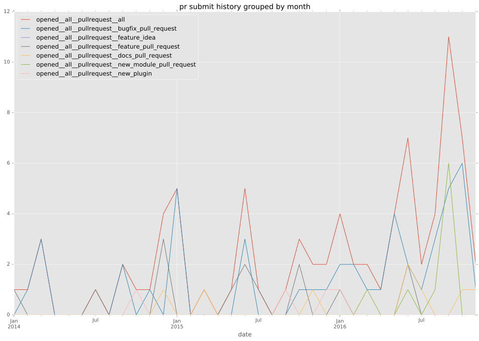
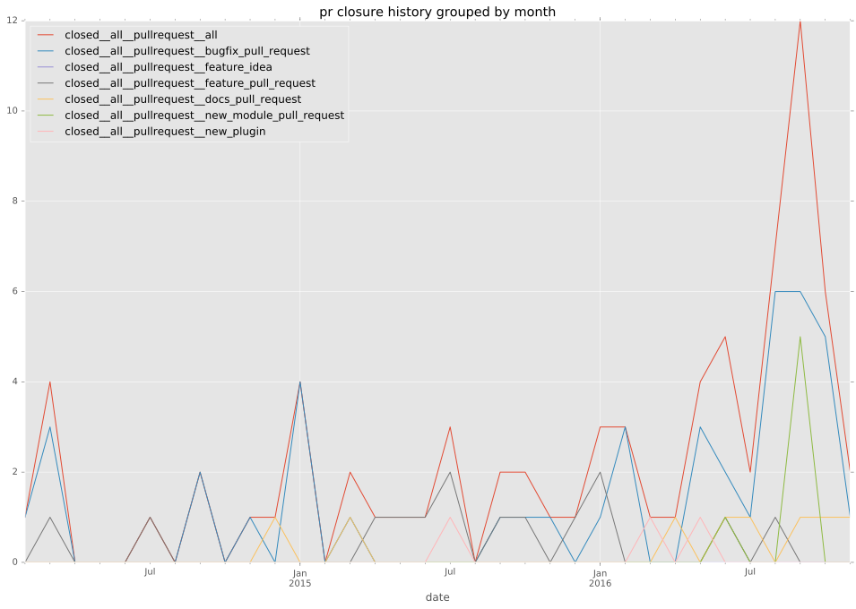

authors
- risaacson
maintainers
- risaacson
contributors
- risaacson : 91 commits
- lifanov : 1 commits
total issue counts
bugfix pull request: 17
docs report: 1
pullrequest: 29
docs pull request: 1
feature pull request: 8
feature idea: 1
issue: 7
new plugin: 3
bug report: 5
issue history

pullrequest history


days open by issue type
feature pull request
count: 12
std: 44.6626241952
min: 0
max: 125
median: 30.0
mean: 38.75
all
count: 45
std: 109.781771591
min: 0
max: 559
median: 1.0
mean: 36.0888888889
pullrequest
count: 0
std: nan
min: nan
max: nan
median: nan
mean: nan
docs pull request
count: 1
std: nan
min: 6
max: 6
median: 6.0
mean: 6.0
docs report
count: 1
std: nan
min: 559
max: 559
median: 559.0
mean: 559.0
bugfix pull request
count: 23
std: 1.4405203276
min: 0
max: 5
median: 0.0
mean: 0.565217391304
feature idea
count: 0
std: nan
min: nan
max: nan
median: nan
mean: nan
issue
count: 0
std: nan
min: nan
max: nan
median: nan
mean: nan
new plugin
count: 4
std: 21.2504901904
min: 4
max: 49
median: 8.0
mean: 17.25
bug report
count: 4
std: 236.844534101
min: 0
max: 483
median: 14.5
mean: 128.0
closures grouped by total days open